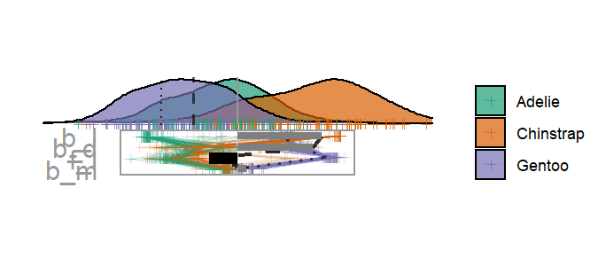
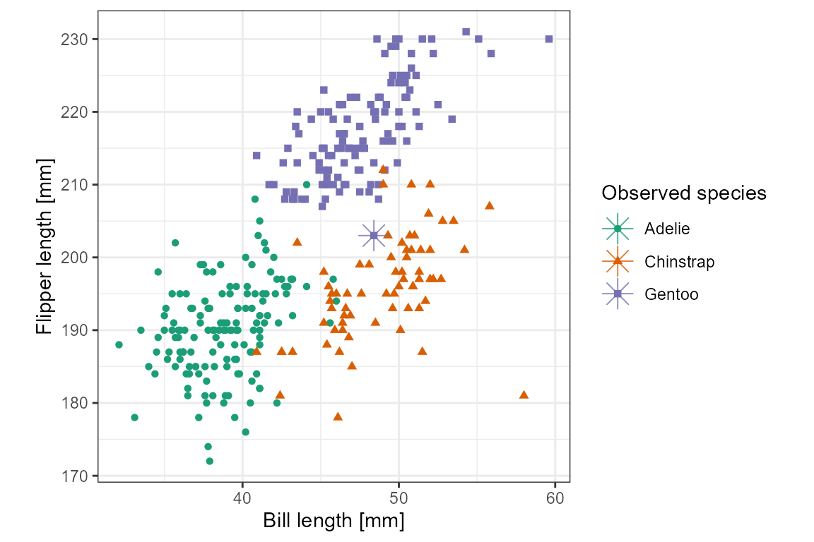

Getting started with cheem
Nicholas Spyrison
2022-02-09
Source:vignettes/getting-started-with-cheem.Rmd
getting-started-with-cheem.RmdTL;DR, you can jump straight into the visuals and application with cheem::run_app(), but we suggest you read the introduction to get situated with the context first.
Introduction
Non-linear models regularly result in more accurate prediction than their linear counterparts. However the number and complexity of the terms in the model make them more opaque to the interpretability of the terms and correspondingly our ability to understand how features (variables or predictors) influence predictions. The emergence of eXplainable Artificial Intelligence (XAI) attempts to bring interpretability back to models.
One part of this is with the use of local explanations. Local explanations approximate the feature importance in the vicinity of one instance (observation).

Illustration of non-linear classification boundary. The use of local explanations approximates the feature importance in the vicinity of one instance. This allow us to understand a change in which features would result in a red plus being classified as a blue circle. From Ribiro, M. et. all. (2017). Why should I trust you?
Should we trust the purposed feature importance in the vicinity of a misclassified or an extreme residual? An analyst may want to explore the support feature contributions where the explanations makes sense or may be completely unreliable. This is the type of analysis visually explored in cheem.
We use the normalized linear-feature attribution as a basis and explore the support of features that confirm this explanation what under which contributions this explanation does not hold. A data visualization tour animates linear projection-embeddings over small changes in the basis. The package spinifex facilitates radial, manual tours which vary the contribution of a select feature. By using a radial tour we test the support of the features.
While this framework would for any non-linear model and compatible local explanation we’ll illustrate with randomForest models and the tree SHAP local explanation with treeshap (available on GitHub).
Preprocessing
The first thing we’ll need are data and tree based model. We’ll use a wrapper function for a randomForest modest with modest hyperparameters. This will avoid overfitting and help mitigate the runtime of tree SHAP. Alternatively, treeshape and cheem are compatible with tree based models from ranger, gbm, xgboost, catboost, and lightgbm.
library(cheem)
library(spinifex)
## Classification case, Penguins data
X <- penguins_na.rm[, 1:4]
clas <- penguins_na.rm$species
Y <- as.integer(clas)
colnames(X) <- c("b_l", "b_d", "f_l", "b_m")
## Create a random forest classifying penguin species
rf_fit <- default_rf(X, Y, verbose = FALSE)
## For other compatible tree based models see examples in:
if(FALSE)
?is_randomForestNext we need to extract the local explanation from each observation. Originally only tree SHAP is supported. Then we’ll prepare the information to be consumed by the cheem visuals.
## Local attribution of all observations
shap_df <- attr_df_treeshap(rf_fit, X, verbose = FALSE, noisy = FALSE)
## Extract statistics and prep for cheem consumption
this_ls <- cheem_ls(X, Y, class = clas,
model = rf_fit, attr_df = shap_df, verbose = FALSE)Now we are done with all of the leg work, let’s turn our attention towards the visuals and analysis.
Cheem viewer
We have extracted tree SHAP, an feature importance measure in the vicinity of each observation. We need to identify an instance of interest to explore; we do so with the linked brushing available in the global view. Then we will vary contributions from different features to test the support an explanation in a radial tour
Global view
To get more complete view lets look at approximations of the data space, attribution space, and model fits side-by-side with linked brushing with the help of plotly and crosstalk. The model information is essentially the confusion matrix for the classification case.
global_view(this_ls, primary_obs = 243, comparison_obs = 169,
height_px = 240, width_px = 720)From this global view we want to identify a primary instance (PI) and optionally a comparison instance (CI) to explore. Misclassified or observations with high residuals are good targets for further exploration. One point sticks out in this case. Instance 243 (shown as *) is a Gentoo (purple) penguin, while the model predict it to be a Chinstrap penguin. Peguin 169 (shown as x) is reasonably close by and correctly predicted as Gentoo. In practice we used linked brushing and misclassification information to guide our search.
Radial tour
There is a lot to unpack here. The normalized distribution of all feature attribution from all instances are shown as parallel coordinates lines. The above selected PI and CI are shown here as a dashed and dotted line respectively. The first thing we notice is that the attribution of the PI is close to it’s (incorrect) prediction of Chinstrap (orange) in terms of bill length (b_l) and flipper length (f_l). In terms of bill depth and body mass (b_d and b_m) it is more like its observed species Gentoo (purple). We select flipper length as the feature to manipulate.
## Normalized attribution basis of the PI
bas <- basis_attr_df(shap_df, rownum = 243)
## Default to feature to manipulation;
#### the feature with largest separation between PI and CI attribution
mv <- manip_var_of_attr_df(shap_df, primary_obs = 243, comparison_obs = 169)
## Make the radial tour
ggt <- radial_cheem_tour(
this_ls, basis = bas, manip_var = mv,
primary_obs = 243, comparison_obs = 169, angle = .25)
## Animate it
animate_gganimate(ggt, fps = 6)
#height = 2, width = 4.5, units = "in", res = 150
## Or as a plotly html widget
#animate_plotly(ggt, fps = 4)
Starting from the attribution projection, this instance already looks more like its observed Gentoo than predicted Chinstrap. However, by frame 8, the basis has a full contribution of flipper length and does look more like the predicted Chinstrap. Looking at the parallel coordinate lines on the basis visual we can see that flipper length has a large gap between PI and CI, lets check the original variables to digest.
library(ggplot2)
ggplot(penguins_na.rm, aes(x = bill_length_mm,
y = flipper_length_mm,
colour = species,
shape = species)) +
geom_point() +
## Highlight PI, *
geom_point(data = penguins_na.rm[243, ], shape = 8, size = 5, alpha = 0.8) +
## Theme, scaling, color, and labels
theme_bw() +
theme(aspect.ratio = 1) +
scale_color_brewer(palette = "Dark2") +
labs(y = "Flipper length [mm]", x = "Bill length [mm]",
color = "Observed species", shape = "Observed species")
This profile, with two features that are most distinguished between the PI and CI. This instance is nested in the in between the Chinstrap penguins. That makes this instance particularly hard for a random forest model to classify as decision tree can only make partition on one value (horizontal and vertical lines here).
Shiny application
We provide an interactive shiny application. Interactive features are made possible with plotly, crosstalk, and DT. We have preprocessed simulated and modern datasets for you to explore this analysis with. Alternatively, bring your own data by saving the return of cheem_ls() as an .rds file. Follow along with the example in ?cheem_ls.
Conclusion
Interpretability of black-box models is important to maintain. Local explanation extend this interpretability by approximating the feature importance in the vicinity of one instance. We purpose post-hoc analysis of these local explanations. First we explore them in a global, full instance context. Then we explore the support of the local explanation to see where it seems plausible or unreliable.